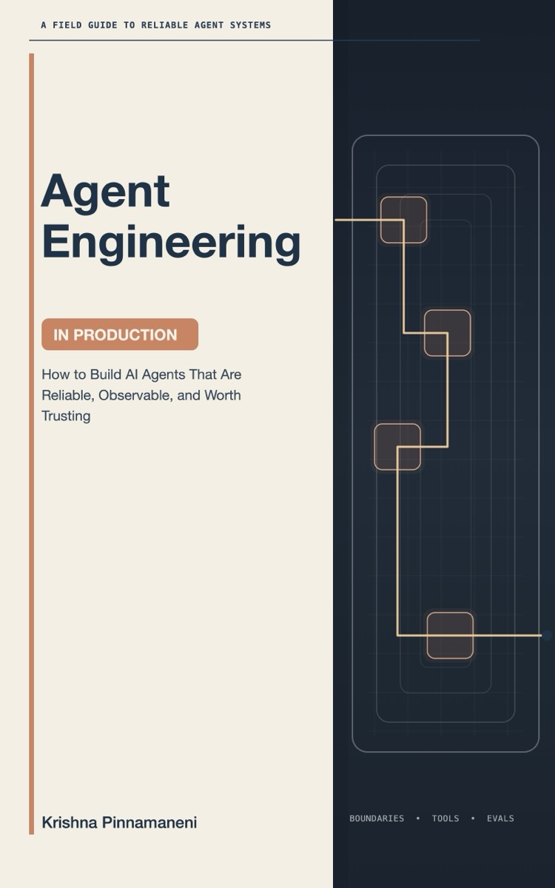
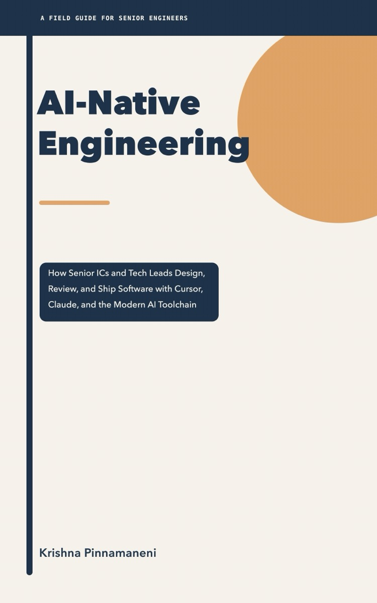

Platform adoption
25%less product development time
Built a platform teams chose to use.
Created a companywide UI platform and design system from zero, reaching 100% adoption across PayPal, Venmo, Xoom, Honey, and iZettle and enabling 500+ engineers.
Engineering leader at PayPal · Independent builder · Author
I build platforms.
I grow teams.
I deliver.
16+ years of experience turning complex engineering problems into shared platforms, stronger organizations, and consumer products at scale.
PAYPAL / ADP / VERIZON
Selected leadership impact · PayPal
I lead managers, build shared platforms, and turn difficult delivery situations into measurable outcomes.
Platform adoption
25%less product development time
Created a companywide UI platform and design system from zero, reaching 100% adoption across PayPal, Venmo, Xoom, Honey, and iZettle and enabling 500+ engineers.
Delivery turnaround
~90%automated test coverage
Turned around Growth and Shopping delivery after a three-month delay: shipped an estimated six months of work in one month, raised coverage from zero to approximately 90%, and reduced defects by 50%.
Product launch
650K+PayPal+ enrollments in the UK and Norway
Took PayPal+ Loyalty from concept to company announcement in three months, with every planned launch delivered on time across the UK, Germany, and Norway.
My current scope: Senior Manager, Software Engineering at PayPal, leading five domains—Home, Shopping, Loyalty, Profile Hub, and Growth—with a 50+ engineer organization.
Career and platform experienceSelected independent projects
Hands-on work in privacy, financial workflows, and AI tools keeps my engineering judgment grounded in product decisions, implementation, and shipping.
AI privacy · Browser + iPhone
Preview, redact, or block sensitive prompts before submission to ChatGPT and Gemini in the browser. The companion iPhone app helps users review sensitive prompts before sharing.
Engineering focus: protection at the point of disclosure.
View the iPhone appPrivacy · On-device processing
Remove metadata from photos, videos, and PDFs before sharing. A focused privacy utility built around local processing and a simple review-and-export workflow.
Engineering focus: useful privacy with less friction.
Explore CleanShareConsumer product · Records to actions
Turn receipts, renewals, refunds, packages, warranties, and billing records into clear actions with the supporting evidence close at hand.
Engineering focus: making messy records actionable.
Explore KaiInboxFinancial workflows · Document processing
Convert bank statements into structured spreadsheet data, turning a repetitive document task into a focused product workflow.
Engineering focus: moving from documents to usable data.
Explore StatementSnapBeyond the app catalog
My independent research includes an agent-payment protocol prototype with simulated payment rails, delegated authority, spending limits, approvals, and deterministic replay. I also built an educational Python evaluation toolkit covering outcome grading, tool-policy checks, paired comparisons, and release gates.
These are prototype and educational projects, separate from production payment systems.
Including 90+ Apple App Store apps, plus software for Android, Windows, web, and browsers.
Loyalty infrastructure · Sandbox pilot
A controlled loyalty-migration pilot for mapping balances and rules, testing return paths, and making a reviewable replacement decision.
Explore LoyumiShopping research · Web product
Independent deal research with price comparisons, merchant context, and visible check dates to make purchase decisions easier to inspect.
Visit DealDesk.fyiAll projects, apps, and books shown here are personal work, independent of PayPal.
25+ books
The books are practical field guides for engineers using AI in serious software delivery, with a focus on review, testing, reliability, and production habits.

Agent systems
How to build AI agents that are reliable, observable, and worth trusting.

AI-native software delivery
How senior ICs and tech leads use modern AI tooling without losing rigor.
Let’s talk
I welcome conversations about engineering leadership, shared platforms, developer experience, consumer commerce, and practical AI adoption.
16+ years across PayPal, ADP, and Verizon, with experience leading engineering managers, scaling shared platforms, building consumer products, and improving delivery. My current PayPal organization spans 50+ engineers across backend, web, iOS, and Android.
The full catalog includes apps, web products, technical books, and browser tools. Independent projects are separate from my work at PayPal.